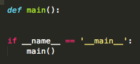

How do I even start coding with python?
You can start by first downloading Sublime. It's a free coding software. Make sure you have some sort of terminal on your computer. Most computers, if not all, come with one already. Then you can look down the page a little bit for instructions.
Sublime Text
For these lessons, we will be using Sublime text, a program for coding.
You can find it here.
Starting your program
Before you do anything, the first thing you need to do it save. You can do this by going into the top left corner of the screen (on a mac) and clicking file then New File. Then, go to file again, and click save or save as. Alternatively, you can just press command+s. When you choose the name of the file, add .py to the end of it, and do not add any spaces. You can name it whatever you want, but I am naming it CSXWebPython.py
The first thing on any sublime python program is:
def main():
if __name__ == '__main__':
main()
You do not need to remember if__name(and so on), you can just type if under def main():, and it should come up in a little box like this:
Just press enter. If the word if is grey, you probably did not save yet.
It should look like this
Saving
Press command+s to save. Saving is an important part of coding. It is so important, it gets a little text box. Save whenever you can. I can not stress this enough.
The small circle means that the program has not been saved. The little x means it is saved and ready to go!
For this tutorial, I will be using the MacBook Pros default terminal. It comes with the laptop, and requires no download. You can find it in your programs. There are certain commands for using the terminal. You can use them by typing them in and pressing enter.
LS: Show everything in the current location. It should list everything. CD ___: Open the folder specified after CD. Ex: CD Documents python ____.py: Activates the python program specified in ____.Use these commands to navigate your computer until you find the program itself. Activate it, and it should print Hello, world! If it pops up with an error, or something else, check your code, or see if you saved.